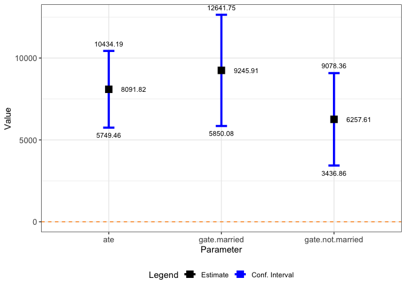
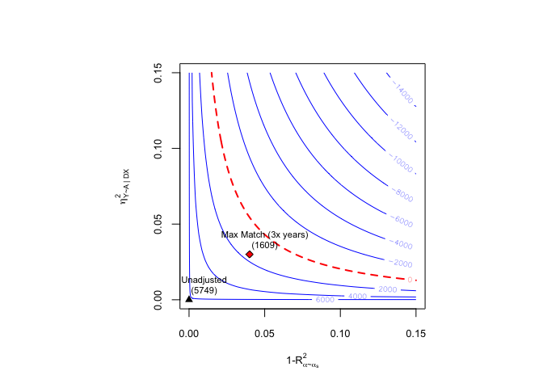

Development version
To install the development version on GitHub make sure you have the package devtools installed.
# install.packages("devtools")
devtools::install_github("carloscinelli/dml.sensemakr")Example
Data
# loads package
library(dml.sensemakr)
#> See details in:
#> - Chernozhukov, V. Cinelli, C. Newey, W. Sharma, A. Syrgkanis, V. (2021). Long Story Short: Omitted Variable Bias in Causal Machine Learning. National Bureau of Economic Research, Working Paper Series, 30302.
#> - Available at: http://www.nber.org/papers/w30302
## loads data
data("pension")
y <- pension$net_tfa # net total financial assets
d <- pension$e401 # 401K eligibility
x <- model.matrix(~ -1 + age + inc + educ+ fsize + marr + twoearn + pira + hown, data = pension)
## compute income quartiles
g1 <- cut(x[,"inc"], quantile(x[,"inc"], c(0, 0.25,.5,.75,1), na.rm = TRUE),
labels = c("q1", "q2", "q3", "q4"), include.lowest = T)Fit DML
# run DML (nonparametric model)
dml.401k <- dml(y, d, x, model = "npm", groups = g1, cf.folds = 5, cf.reps = 5)
#> Debiased Machine Learning
#>
#> ======================================
#> Repeating 5-fold cross-fitting 5 times
#> ======================================
#>
#> -- Rep 1 -- Folds: 1 2 3 4 5
#>
#> -- Rep 2 -- Folds: 1 2 3 4 5
#>
#> -- Rep 3 -- Folds: 1 2 3 4 5
#>
#> -- Rep 4 -- Folds: 1 2 3 4 5
#>
#> -- Rep 5 -- Folds: 1 2 3 4 5Explore results
# summary of results with median method (default)
summary(dml.401k)
#>
#> Debiased Machine Learning
#>
#> Model: Nonparametric
#> Cross-Fitting: 5 folds, 5 reps
#> ML Method: outcome (ranger, R2 = 0.276), treatment (ranger, R2 = 0.115)
#> Tuning: clean
#>
#> Average Treatment Effect:
#>
#> Estimate Std. Error t value P(>|t|)
#> ate 8091.8 1195.1 6.7708 1.281e-11 ***
#> ---
#> Signif. codes: 0 '***' 0.001 '**' 0.01 '*' 0.05 '.' 0.1 ' ' 1
#>
#> Group Average Treatment Effect:
#>
#> Estimate Std. Error t value P(>|t|)
#> gate.q1 4358.58 829.27 5.2559 1.473e-07 ***
#> gate.q2 2742.43 1317.61 2.0814 0.0374009 *
#> gate.q3 6927.60 1844.41 3.7560 0.0001726 ***
#> gate.q4 18439.90 4147.12 4.4464 8.731e-06 ***
#> ---
#> Signif. codes: 0 '***' 0.001 '**' 0.01 '*' 0.05 '.' 0.1 ' ' 1
#>
#> Note: DML estimates combined using the median method.
# summary of results with mean method
summary(dml.401k, combine.method = "mean")
#>
#> Debiased Machine Learning
#>
#> Model: Nonparametric
#> Cross-Fitting: 5 folds, 5 reps
#> ML Method: outcome (ranger, R2 = 0.273), treatment (ranger, R2 = 0.116)
#> Tuning: clean
#>
#> Average Treatment Effect:
#>
#> Estimate Std. Error t value P(>|t|)
#> ate 8099.2 1170.5 6.9193 4.539e-12 ***
#> ---
#> Signif. codes: 0 '***' 0.001 '**' 0.01 '*' 0.05 '.' 0.1 ' ' 1
#>
#> Group Average Treatment Effect:
#>
#> Estimate Std. Error t value P(>|t|)
#> gate.q1 4316.14 809.04 5.3349 9.560e-08 ***
#> gate.q2 2724.80 1279.89 2.1289 0.0332594 *
#> gate.q3 6899.00 1830.30 3.7693 0.0001637 ***
#> gate.q4 18455.25 4030.60 4.5788 4.677e-06 ***
#> ---
#> Signif. codes: 0 '***' 0.001 '**' 0.01 '*' 0.05 '.' 0.1 ' ' 1
#>
#> Note: DML estimates combined using the mean method.extract coefs, se, confidence intervals
# coef median method (default)
coef(dml.401k)
#> ate gate.q1 gate.q2 gate.q3 gate.q4
#> 8091.825 4358.585 2742.432 6927.597 18439.900
# coef mean method (default)
coef(dml.401k, combine.method = "mean")
#> ate gate.q1 gate.q2 gate.q3 gate.q4
#> 8099.238 4316.141 2724.799 6898.999 18455.247
# se median method (default)
se(dml.401k);
#> ate gate.q1 gate.q2 gate.q3 gate.q4
#> 1195.106 829.267 1317.615 1844.407 4147.123
# se median method (default)
se(dml.401k, combine.method = "mean")
#> ate gate.q1 gate.q2 gate.q3 gate.q4
#> 1170.5315 809.0396 1279.8862 1830.2993 4030.5964
# confint median method (default)
confint(dml.401k)
#> 2.5 % 97.5 %
#> ate 5749.4605 10434.189
#> gate.q1 2733.2512 5983.918
#> gate.q2 159.9547 5324.909
#> gate.q3 3312.6249 10542.569
#> gate.q4 10311.6876 26568.113
# confint mean method
confint(dml.401k, combine.method = "mean")
#> 2.5 % 97.5 %
#> ate 5805.039 10393.438
#> gate.q1 2730.452 5901.829
#> gate.q2 216.268 5233.330
#> gate.q3 3311.678 10486.319
#> gate.q4 10555.423 26355.071
You can add groups after the model is fit
## compute GATE by married
g2 <- ifelse(pension$marr, "married", "not.married")
dml.401k.g2 <- dml_gate(dml.fit = dml.401k, groups = g2)
summary(dml.401k.g2)
#>
#> Debiased Machine Learning
#>
#> Model: Nonparametric
#> Cross-Fitting: 5 folds, 5 reps
#> ML Method: outcome (ranger, R2 = 0.276), treatment (ranger, R2 = 0.115)
#> Tuning: clean
#>
#> Average Treatment Effect:
#>
#> Estimate Std. Error t value P(>|t|)
#> ate 8091.8 1195.1 6.7708 1.281e-11 ***
#> ---
#> Signif. codes: 0 '***' 0.001 '**' 0.01 '*' 0.05 '.' 0.1 ' ' 1
#>
#> Group Average Treatment Effect:
#>
#> Estimate Std. Error t value P(>|t|)
#> gate.married 9245.9 1732.6 5.3364 9.479e-08 ***
#> gate.not.married 6257.6 1439.2 4.3480 1.374e-05 ***
#> ---
#> Signif. codes: 0 '***' 0.001 '**' 0.01 '*' 0.05 '.' 0.1 ' ' 1
#>
#> Note: DML estimates combined using the median method.
coef(dml.401k.g2)
#> ate gate.married gate.not.married
#> 8091.825 9245.915 6257.614
confint(dml.401k.g2)
#> 2.5 % 97.5 %
#> ate 5749.460 10434.189
#> gate.married 5850.084 12641.746
#> gate.not.married 3436.865 9078.363
plot(dml.401k.g2)
Sensitivity Analysis
Robustness Values
robustness_value(dml.401k, alpha = 0.05)
#> ate gate.q1 gate.q2 gate.q3 gate.q4
#> 0.046511790 0.071942007 0.008136323 0.037350432 0.059227556Confidence Bounds
confidence_bounds(dml.401k, r2ya.dx = 0.03, r2.rr = 0.04, level = 0.95)
#> lwr upr
#> ate 1609.3103 14629.8627
#> gate.q1 1591.3233 7200.4139
#> gate.q2 -1969.6733 6766.7145
#> gate.q3 288.5335 13347.5348
#> gate.q4 4945.2106 32061.7459
#>
#> Confidence level: point = 95%; region = 90%.
#> Sensitivity parameters: r2ya.dx = 0.03; r2.rr = 0.04; rho2 = 1.Contour Plots
ovb_contour_plot(dml.401k, r2ya.dx = 0.03, r2.rr = 0.04, rho2 = 1,
bound.label = "Max Match (3x years)",
col.contour = "blue")
Further results
bounds.401k <- dml_bounds(dml.401k, r2ya.dx = 0.03, r2.rr = 0.04)
bounds.401k
#>
#> Debiased Machine Learning: Bounds on Omitted Variable Bias
#>
#> Sensitivity Parameters
#> r2ya.dx = 0.03
#> r2rr = 0.04
#> rho = 1
#>
#> Bounds on Average Treatment Effect:
#>
#> Estimate Std. Error t value P(>|t|)
#> Short Estimate 8091.82 1195.11 6.7708 1.281e-11 ***
#> |Bias| Bound 4499.11 342.34 13.1423 < 2.2e-16 ***
#> Lower Bound 3626.44 1226.33 2.9572 0.003105 **
#> Upper Bound 12557.56 1259.87 9.9673 < 2.2e-16 ***
#> ---
#> Signif. codes: 0 '***' 0.001 '**' 0.01 '*' 0.05 '.' 0.1 ' ' 1
#>
#>
#> Bounds on Group Average Treatment Effect: Group q1
#>
#> Estimate Std. Error t value P(>|t|)
#> Short Estimate 4358.58 829.27 5.2559 1.473e-07 ***
#> |Bias| Bound 1423.55 113.12 12.5840 < 2.2e-16 ***
#> Lower Bound 2930.82 814.36 3.5989 0.0003195 ***
#> Upper Bound 5786.35 859.69 6.7307 1.688e-11 ***
#> ---
#> Signif. codes: 0 '***' 0.001 '**' 0.01 '*' 0.05 '.' 0.1 ' ' 1
#>
#> Bounds on Group Average Treatment Effect: Group q2
#>
#> Estimate Std. Error t value P(>|t|)
#> Short Estimate 2742.43 1317.61 2.0814 0.0374 *
#> |Bias| Bound 2109.02 439.79 4.7955 1.623e-06 ***
#> Lower Bound 627.07 1578.71 0.3972 0.6912
#> Upper Bound 4857.79 1160.54 4.1858 2.842e-05 ***
#> ---
#> Signif. codes: 0 '***' 0.001 '**' 0.01 '*' 0.05 '.' 0.1 ' ' 1
#>
#> Bounds on Group Average Treatment Effect: Group q3
#>
#> Estimate Std. Error t value P(>|t|)
#> Short Estimate 6927.60 1844.41 3.7560 0.0001726 ***
#> |Bias| Bound 3367.48 575.31 5.8533 4.819e-09 ***
#> Lower Bound 3560.11 1988.98 1.7899 0.0734668 .
#> Upper Bound 10295.08 1855.76 5.5476 2.896e-08 ***
#> ---
#> Signif. codes: 0 '***' 0.001 '**' 0.01 '*' 0.05 '.' 0.1 ' ' 1
#>
#> Bounds on Group Average Treatment Effect: Group q4
#>
#> Estimate Std. Error t value P(>|t|)
#> Short Estimate 18439.90 4147.12 4.4464 8.731e-06 ***
#> |Bias| Bound 6659.33 607.28 10.9658 < 2.2e-16 ***
#> Lower Bound 11750.35 4137.23 2.8401 0.004509 **
#> Upper Bound 25078.45 4245.54 5.9070 3.484e-09 ***
#> ---
#> Signif. codes: 0 '***' 0.001 '**' 0.01 '*' 0.05 '.' 0.1 ' ' 1
#>
#> Note: DML estimates combined using the median method.
coef(bounds.401k)
#> ate gate.q1 gate.q2 gate.q3 gate.q4
#> theta.s 8091.825 4358.585 2742.4319 6927.597 18439.900
#> bias.bound 4499.113 1423.555 2109.0171 3367.484 6659.332
#> theta.m 3626.439 2930.820 627.0744 3560.113 11750.345
#> theta.p 12557.559 5786.350 4857.7894 10295.081 25078.449
se(bounds.401k)
#> ate gate.q1 gate.q2 gate.q3 gate.q4
#> theta.s 1195.1057 829.2670 1317.6146 1844.4074 4147.1235
#> bias.bound 342.3373 113.1245 439.7911 575.3132 607.2823
#> theta.m 1226.3274 814.3559 1578.7105 1988.9793 4137.2280
#> theta.p 1259.8713 859.6900 1160.5440 1855.7604 4245.5430
confint(bounds.401k)
#> $ate
#> 2.5 % 97.5 %
#> theta.s 5749.460 10434.189
#> bias.bound 3828.144 5170.082
#> theta.m 1222.882 6029.997
#> theta.p 10088.256 15026.861
#>
#> $gate.q1
#> 2.5 % 97.5 %
#> theta.s 2733.251 5983.918
#> bias.bound 1201.835 1645.275
#> theta.m 1334.711 4526.928
#> theta.p 4101.388 7471.311
#>
#> $gate.q2
#> 2.5 % 97.5 %
#> theta.s 159.9547 5324.909
#> bias.bound 1247.0423 2970.992
#> theta.m -2467.1414 3721.290
#> theta.p 2583.1649 7132.414
#>
#> $gate.q3
#> 2.5 % 97.5 %
#> theta.s 3312.6249 10542.569
#> bias.bound 2239.8906 4495.077
#> theta.m -338.2144 7458.441
#> theta.p 6657.8571 13932.304
#>
#> $gate.q4
#> 2.5 % 97.5 %
#> theta.s 10311.688 26568.113
#> bias.bound 5469.080 7849.583
#> theta.m 3641.527 19859.163
#> theta.p 16757.338 33399.560